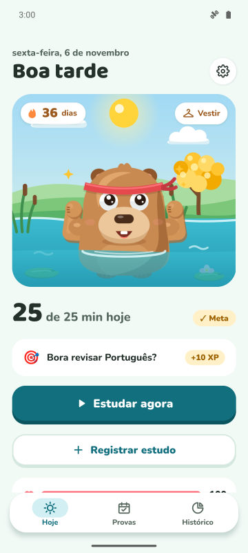
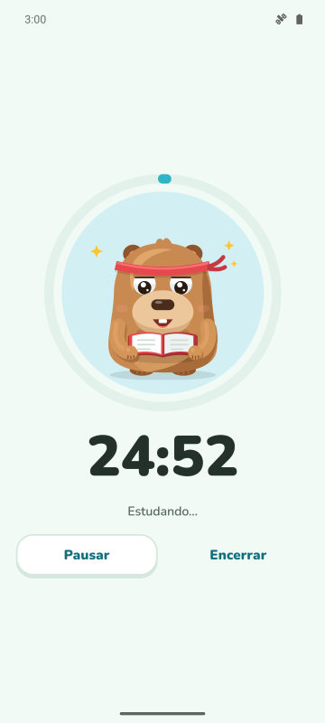
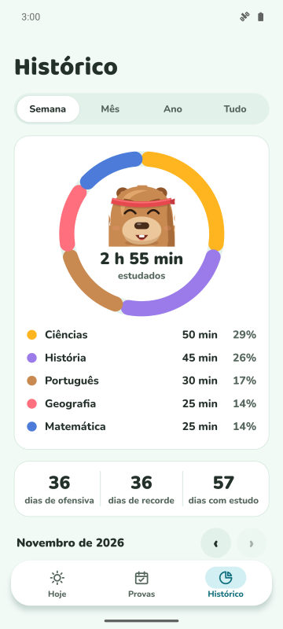
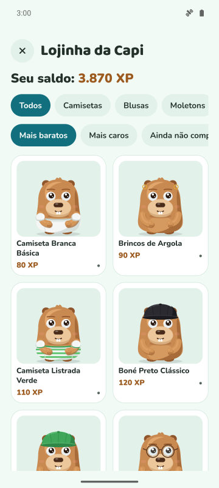

Meta do dia e ofensiva
Escolha quantos minutos estudar por dia. Cumpriu, a ofensiva sobe e a capivara comemora.
Cronômetro de foco, ofensiva diária e contagem para as provas. Quanto mais você estuda, mais feliz e forte a sua capivara fica.
Em breve no Google Play
Grátis para Android. iPhone depois.

Escolha quantos minutos estudar por dia. Cumpriu, a ofensiva sobe e a capivara comemora.
Cronômetro com três modos. No Modo Protegido, a capivara aparece por cima dos apps que você quer evitar.
Cadastre a prova e veja os dias que faltam. Todo dia sai uma missão com a matéria que mais precisa de atenção.
Ganhe XP estudando e troque por roupas e acessórios. Ela também comemora datas especiais e o seu aniversário.



Sim. O app é grátis com anúncios. O Premium (opcional) tira os anúncios e libera o Modo Protegido, o silêncio de notificações no foco e 3 protetores de ofensiva por mês.
Não. Seus dados ficam no seu celular. Se quiser, dá para sincronizar com o seu próprio Google Drive.
Sim. Você cadastra a data da prova, acompanha a contagem regressiva e recebe lembretes 7, 3 e 1 dia antes.
No Forest você planta árvores. No CapyFoco você cuida de uma capivara que cresce com o seu estudo, com ofensiva diária, metas e contagem para provas, tudo no mesmo app.
Por enquanto só Android. A versão para iPhone está nos planos.